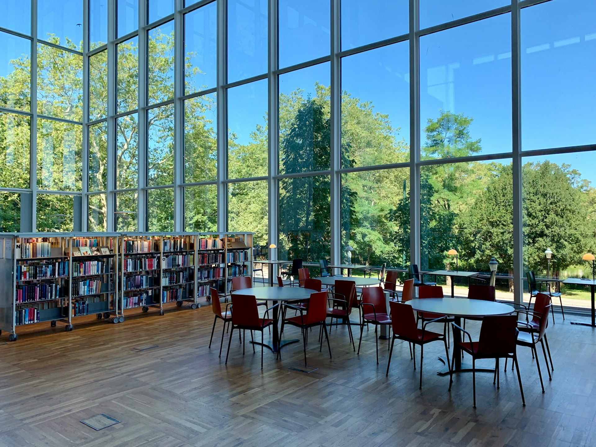

As the school year picks up pace, we wanted to take a moment to share some exciting updates with you. First, we’ve made significant changes to the Spot-TO website to improve your experience. With a fresh new layout, streamlined user interface, and updated images, navigating the platform has never been easier. You can now easily find volunteering opportunities, internships, and scholarships, with everything clearly organized for quick access.
In addition to the website redesign, we’ve added new scholarships for you to explore. The Loran Scholarship, TD Scholarship,and Wolf Scholarship are now available on Spot-TO.
For Grade 12 students, it’s time to take action. The university application process is fast approaching, and now is the time to focus on what you need for each program. Review the requirements for your top choices, and start working on your applications. It’s important to practice for any supplemental applications, begin drafting your personal essays, and carefully research each program to understand what will help you stand out.
As midterms draw closer, maintaining your momentum is key. Don’t get complacent. Keep pushing yourself, stay organized, and use this time wisely to ensure you are well-prepared for the challenges ahead.
We understand that balancing high school responsibilities and planning for the future can be tough. But with the right resources and a organized approach, you can tackle these challenges with confidence. Keep Spot-TO as your go-to resource for discovering volunteer opportunities, internships, and scholarships.
The Spot-TO team is here to support you in any way we can. Stay focused and motivated. Remember, the effort you put in now will pay off in the future. We wish you the best of luck with your studies, midterms, and university applications.
Good luck, out there!
SpotTO TeamIt's the team here, and we're excited to share some awesome updates with you all! We've been working hard behind the scenes to make SpotTO even better. Our new UI design is live, and it's cleaner, faster, and way more intuitive. We've streamlined a lot of things, like taking most of our opportunities and putting them all into a search bar. This means you can now easily find exactly what you're looking for without scrolling through unnecessary pages. Plus, we've added an "About Us" and "Contact" page to make it easier for you to connect with us.
our revamped design focuses on making your search for opportunities quicker and more efficient. The new search bar allows you to easily find the most relevant opportunities, while the added "About Us" and "Contact" pages help you get in touch with us whenever you need.
If you're in Grade 12, now's the time to seriously start preparing for university. Whether it's researching schools, looking at programs, or even applying for scholarships, the more you prep now, the smoother your transition will be. Don't wait until the last minute!
For those of you in Grade 11, this year is crucial! Your efforts now will help you stand out in university applications next year. Focus on your studies, get involved in extracurriculars, and start networking. It's never too early to start making connections.
If you're younger than Grade 11, now's the time to get involved in extracurriculars. Internships and volunteer work are the best way to build your resume early. Use SpotTO to find opportunities that fit your interests and help you stand out when the time comes to apply for a summer internship.
Whether you're applying for university or looking for an internship, the best thing you can do is to really understand the subjects you're studying. Don't just skim the surface, dive deep into topics that interest you. The more you know, the better prepared you'll be when an internship or opportunity comes your way. When you apply, you'll have the knowledge and confidence to really impress the hiring team.
Remember, SpotTO is here to help you find those opportunities, but it's up to you to make the most of them. The more you prepare, the more doors will open.
As always, if you have any questions or need help navigating the site, feel free to hit us up through our new contact page. We're here to help!
Good luck, and let's make this year count!
Till Next Time,
SpotTO TeamWe hope your summer is going great! In this exclusive monthly post, we're going to dive into the essential steps for crafting a standout resume that will truly make you shine.
1. OrganizationProper organization is a reflection of your attention to detail and quality of work, so it's crucial to structure your resume thoughtfully.
2. The Ideal Resume Format:Let's break down these components and I'll give you specific recommendations for each:
This section is pretty straightforward—make sure your name, contact details, and address are clearly presented at the top of your resume. Stick to a professional email address—avoid using personal or playful ones.
The objective is a crucial part, where you'll connect your interests and experiences to the specific job you're applying for. Limit it to 1-2 sentences, and align it with the job description. If needed, use tools like ChatGPT to help structure your objective, but always make sure it reflects your unique qualifications.
List your educational background in chronological order, highlighting any relevant achievements. Don't hesitate to mention awards, honors, or other educational experiences like specialized camps or certifications.
This is the meat of your resume, so it's essential to organize it effectively. Under each experience, list 3-5 bullet points that describe your role and contributions. Be Specific! talk about a how much you raised, how much members to a club you brought in or what you discovered. For more advanced resumes, you can add more details, but ensure that each point is relevant to the job you're applying for. Remember to be consistent with punctuation, especially whether you use periods after each point.
Start each experience with an action verb or adjective that reflects your role. You can use tools like ChatGPT to tailor your wording, but I encourage you to develop your own writing skills over time for a more authentic touch.
These are optional but can help differentiate you. Instead of listing generic traits like "confidence" or "organization," specify your skills. For example, if you're applying for a digital marketing job and are proficient with Canva or Figma, mention "Technical Proficiency" or "Graphic Design" to align your resume with the role you're targeting.
I can't stress this enough: organization matters! Hiring managers often spend just a few seconds reviewing each resume, so clarity and structure are immediately apparent. If your resume is on the shorter side (for those with less experience), try to keep it to one page. Make sure your dates are aligned and formatted consistently—use three-letter abbreviations (e.g., Jan, Feb, Mar) and italicize them, followed by the year or year span.
For the layout, ensure all section headings are in uppercase, and make your experience entries bold so they stand out. You can also adjust spacing in tools like Google Docs to ensure everything looks neat and aligned.
We're rolling into summer with a burst of opportunity — and whether you've been grinding since January or just realized it's time to make your summer count, SpotTO has your back.
We're excited to announce new scholarships for June and July, available to high school and post-secondary students across the GTA. Whether you're aiming to fund your first year at university or cover the cost of prep courses, books, or even transit, these opportunities are here to make summer dreams more accessible.
Just head Here, explore what's available, and apply to the ones that match your goals. Applications are straightforward — we prioritize effort and intention over perfection.
One job seeker delivered their resume inside a Krispy Kreme box. Not only did it get read — they got hired.
A bold applicant rewrote a company's homepage to display their resume. Wild move (and 100% illegal — we do NOT condone it), but undeniably creative. They got the interview.
One student filmed themselves delivering a resume like a pizza — on a scooter. The employer loved the creativity. Instant callback. Bottom line? People hire effort. People remember creativity.
Look for micro-internships: Some opportunities last only 1–2 weeks — still great for learning and your resume. Cold emails work: Tons of opportunities aren't posted online. Reach out with confidence. Personality = Power: Whether it's a fun one-liner or a bold format, make your resume yours.
We're currently building a smart web scraper to constantly find local scholarships, internships, and programs — and match them to your availability and interests. You won't have to search endlessly anymore — we're making sure the opportunities come to you. Stay tuned — we'll be releasing updates as the feature goes live this summer. 👨💻
👉 Explore new opportunities now at https://spot-to.com